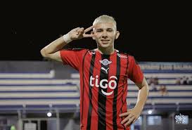

Primer Paso: Inicios en Paraguay
Julio Enciso comenzó su carrera futbolística en Paraguay, demostrando su talento desde muy joven en la liga local...
Leer másJulio Enciso comenzó su carrera futbolística en Paraguay, demostrando su talento desde muy joven en la liga local...
Leer másActualmente, Julio Enciso juega en la Premier League con el Brighton & Hove Albion, donde continúa su crecimiento profesional...
Leer másJulio Enciso ha sido convocado para representar a Paraguay en competiciones internacionales, consolidándose como una joven promesa...
Leer más